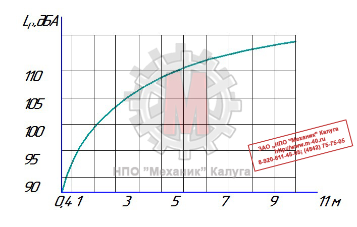
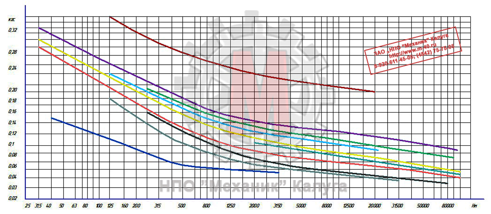

Позвонить: (4842) 75-75-05
Написать сообщение: m-40@inbox.ru

Техническая информация → ГОСТ Р 50891-96
ГОСТ Р 50891-96 Редукторы общемашиностроительного применения. Общие технические условия.
ГОСТ Р 50891-96
Группа Г15
ГОСТ 28648-90
ГОСУДАРСТВЕННЫЙ СТАНДАРТ РОССИЙСКОЙ ФЕДЕРАЦИИ
РЕДУКТОРЫ ОБЩЕМАШИНОСТРОИТЕЛЬНОГО ПРИМЕНЕНИЯ
Общие технические условия
ОКС 21.200
ОКП 41 6100
Дата введения 1997-07-01
Предисловие
1. РАЗРАБОТАН
Всероссийским научно-исследовательским институтом стандартизации и сертификации в машиностроении (ВНИИНМАШ)
ВНЕСЕН
Техническим комитетом по стандартизации ТК 351 "Механические приводы"
2. УТВЕРЖДЕН И ВВЕДЕН В ДЕЙСТВИЕ
Постановлением Госстандарта России от 23 апреля 1996 г. N 285
3. ВВЕДЕН ВПЕРВЫЕ
1. ОБЛАСТЬ ПРИМЕНЕНИЯ
Настоящий стандарт распространяется на редукторы общемашиностроительного применения:
- цилиндрические одно-, двух-, трех- и четырехступенчатые с межосевым расстоянием тихоходной ступени aW ≤ 710 мм;
- планетарные одно-, двух- и трехступенчатые с радиусом расположения осей сателлитов тихоходной ступени r ≤ 315 мм или делительным диаметром центрального
колеса с внутренними зубьями выходной ступени 1000 мм;
- цилиндрическо-планетарные двух-, трех- и четырехступенчатые с делительным диаметром центрального колеса с внутренними зубьями выходной ступени 1000 мм;
- конические одноступенчатые с номинальным внешним делительным диаметром колеса d ≤1000 мм;
- коническо-цилиндрические двух-, трех- и четырехступенчатые с межосевым расстоянием тихоходной ступени aW ≤ 710 мм;
- червячные одно- и двухступенчатые с межосевым расстоянием тихоходной ступени aW ≤ 500 мм;
- глобоидные одноступенчатые с межосевым расстоянием aW ≤ 250 мм;
- червячно-цилиндрические и цилиндрическо-червячные с межосевым расстоянием тихоходной ступени aW ≤ 500 мм;
- волновые одноступенчатые с внутренним диаметром гибкого колеса dL ≤ 315 мм;
- блочно-модульные, составленные из модулей с цилиндрическими, коническими, планетарными, червячными и волновыми передачами.
Требования стандарта могут быть использованы для редукторов специального назначения и специальной конструкции.
Стандарт пригоден для целей сертификации.
Требования стандарта являются обязательными.
Пояснение терминов, применяемых в стандарте, - в приложении А.
2. НОРМАТИВНЫЕ ССЫЛКИ
В настоящем стандарте использованы ссылки на следующие стандарты:
ГОСТ 2.601-95 ЕСКД. Эксплуатационные документы
ГОСТ 9.014-78 ЕСЗКС. Временная противокоррозийная защита изделий. Общие требования
ГОСТ 9.031-74 ЕСЗКС. Покрытия лакокрасочные. Группы, технические требования и обозначения
ГОСТ 9.104-79 ЕСЗКС. Покрытия лакокрасочные. Группы условий эксплуатации
ГОСТ 9.302-88 ЕСЗКС. Покрытия металлические и неметаллические неорганические. Методы контроля
ГОСТ 9.303-84 ЕСЗКС. Покрытия металлические и неметаллические неорганические. Общие требованиея к выбору
ГОСТ 9.306-85 ЕСЗКС. Покрытия металлические и неметаллические неорганические. Обозначения
ГОСТ 12.1.003-83 ССБТ. Шум. Общие требования безопасности
ГОСТ 12.1.026-80* ССБТ. Шум. Определение шумовых характеристик источников шума в свободном звуковом поле над звукоотражающей плоскостью. Технический метод
ГОСТ 12.1.027-80* ССБТ. Шум. Определение шумовых характеристик источников шума в реверберационном помещении. Технический метод
ГОСТ 12.1.028-80* ССБТ. Шум. Определение шумовых характеристик источников шума. Ориентировочный метод
ГОСТ 12.2.003-91 ССБТ. Оборудование производственное. Общие требования безопасности
ГОСТ 977-88 Отливки стальные. Общие технические условия
ГОСТ 1643-81 Основные нормы взаимозаменяемости. Передачи зубчатые цилиндрические. Допуски
ГОСТ 1758-81 Основные нормы взаимозаменяемости. Передачи зубчатые конические и гипоидные. Допуски
ГОСТ 2789-73 Шероховатость поверхности. Параметры и характеристики
ГОСТ 2991-85 Ящики дощатые неразборные для грузов массой до 500 кг. Общие технические условия
ГОСТ 3675-81 Основные нормы взаимозаменяемости. Передачи червячные цилиндрические. Допуски
ГОСТ 5959-80 Ящики из листовых древесных материалов неразборные для грузов массой до 200 кг. Общие технические условия
ГОСТ 7062-90 Поковки из углеродистой и легированной стали, изготовляемые ковкой на прессах. Припуски и допуски
ГОСТ 7505-89 Поковки стальные штампованные. Допуски, припуски и кузнечные напуски
ГОСТ 7829-70 Поковки из углеродистой и легированной стали, изготовляемые ковкой на молотах. Припуски и допуски
ГОСТ 8479-70 Поковки из конструкционной углеродистой и легированной стали. Общие технические условия
ГОСТ 8752-79 Манжеты резиновые армированные для валов. Технические условия
ГОСТ 9178-81 Основные нормы взаимозаменяемости. Передачи зубчатые цилиндрические мелкомодульные. Допуски
ГОСТ 11284-75 Отверстия сквозные под крепежные детали. Размеры
ГОСТ 12971-67 Таблички прямоугольные для машин и приборов
ГОСТ 14140-81 Основные нормы взаимозаменяемости. Допуски расположения осей отверстий для крепежных деталей
ГОСТ 14192-77 Маркировка грузов
ГОСТ 15150-69 Машины, приборы и другие технические изделия
ГОСТ 15152-69 ЕСЗКС. Изделия резиновые технические для районов с тропическим климатом. Общие требования
ГОСТ 16502-83 Основные нормы взаимозаменяемости. Передачи глобоидные. Допуски
ГОСТ 16504-81 Система государственных испытаний продукции. Испытания и контроль качества продукции. Основные термины и определения
ГОСТ 18242-72 Статистический приемочный контроль по альтернативному признаку. Планы контроля
ГОСТ 20373-80 Редукторы и мотор-редукторы. Варианты сборки
ГОСТ 20736-75 Статистический приемочный контроль по количественному признаку. Планы контроля
ГОСТ 23170-78Е Упаковка для изделий машиностроения. Общие требования
ГОСТ 24266-80 Концы валов редукторов и мотор-редукторов. Основные размеры, допускаемые крутящие моменты
ГОСТ 24386-91 Механизмы ведущие и ведомые. Высоты осей
ГОСТ 24643-81 Основные нормы взаимозаменяемости. Допуски формы и расположения поверхностей. Числовые значения
ГОСТ 25484-93 Мотор-редукторы зубчатые. Общие технические условия
ГОСТ 26358-84 Отливки из чугуна. Общие технические условия
ГОСТ 26645-85 Отливки из металлов и сплавов. Допуски размеров, массы и припуски на механическую обработку
ГОСТ 26828-86 Изделия машиностроения и приборостроения. Маркировка
ГОСТ 27871-88 Редукторы общего назначения. Методы определения уровня звуковой мощности
ГОСТ 29067-91 Редукторы и мотор-редукторы. Классификация
ГОСТ 29285-92 Редукторы и мотор-редукторы. Общие требования к методам испытаний
3. КЛАССИФИКАЦИЯ, ТИПЫ, ОСНОВНЫЕ ПАРАМЕТРЫ И РАЗМЕРЫ
3.1 Классификация редукторов - по ГОСТ 29067.
3.2 Типы, основные параметры, масса и размеры, должны быть установлены в стандартах или ТУ на редукторы конкретных типов.
3.3 Условное обозначение редуктора должно включать обозначение редуктора, значения главного параметра, номинального передаточного отношения, обозначение варианта
сборки редуктора по ГОСТ 20373 и обозначение стандарта или ТУ, регламентирующего тип, основные параметры и размеры редуктора.
Пример условного обозначения коническо-цилиндрического трехступенчатого редуктора с главным параметром - межосевым расстоянием тихоходной ступени 250 мм,
передаточным отношением - 80, сборкой 12-й категории точности 1.
Редуктор КЦ2-250-80-12-1 ГОСТ Р 50891-96
При необходимости в условном обозначении редуктора указывают дополнительные признаки по нормативной документации на данный тип редуктора.
4. ТЕХНИЧЕСКИЕ ТРЕБОВАНИЯ
4.1 Номинальный крутящий момент Т - допускаемый крутящий момент на тихоходном валу, при действии которого в сочетании с номинальными радиальными нагрузками на
выходных концах валов редуктора, работающего в условиях, указанных в п. 4.3, должен обеспечиваться 90%-ный ресурс передач валов и подшипников, не менее
регламентируемого стандартом. При наличии соответствующих методов и методик расчета номинальный крутящий момент должен соответствовать расчетному для
данного вида редуктора при указанных условиях применения.
Номинальная радиальная консольная нагрузка F1(2), приложенная в середине посадочной поверхности конца вала (быстроходного или тихоходного) -
допускаемая радиальная
нагрузка, при постоянном приложении которой совместно с номинальным крутящим моментом у редуктора, работающего в условиях, указанных в п. 4.3, должен обеспечиваться
90%-ный ресурс передач, валов и подшипников не менее регламентируемого стандартом.
4.2 Редукторы должны быть изготовлены в соответствии с требованиями настоящего стандарта, стандартов и технических условий на редукторы конкретных типов по
рабочим чертежам, утвержденным в установленном порядке.
4.3 Редукторы должны допускать применение в следующих условиях:
- нагрузка постоянная или переменная одного направления или с периодическим реверсом;
- работа длительная (до 24 ч в сутки) или с периодическими остановками;
- вращение валов в любую сторону без предпочтительности;
- частота вращения входного вала цилиндрических и коническо-цилиндрических редукторов при aW ≥ 315 мм, конических редукторов при
d2 ≥400 мм, планетарных - при
r ≥100 мм, волновых - при 250 ≥ aW ≥ 125 мм, червячных, червячно-цилиндрических, цилиндрическо-червячных и глобоидных редукторов не должна
превышать 1800 об/мин,
волновых редукторов при 160 ≤ d2 ≤ 250 мм - 2300 об/мин;
- при d2 > 250 мм - 1200 об/мин, остальных редукторов - 3600 об/мин;
- окружная скорость цилиндрических эвольвентных колес внешнего зацепления и конических колес не более 20 м/с;
- цилиндрических колес с зацеплением Новикова - не более 12 м/с;
- цилиндрических эвольвентных колес внутреннего зацепления не более 5 м/с, скорость скольжения червячных передач не более 10 м/с;
- атмосфера типов I и II по ГОСТ 15150 при запыленности воздуха не более 10 мг/м ;
- климатические исполнения по ГОСТ 15150;
У и Т для категорий 1-3;
УХЛ и О для категории 4.
4.4 Редукторы должны обеспечивать 90%-ный ресурс, указанный в 4.2.3, также и при кратковременных перегрузках, возникающих во время пусков и превышающих
номинальную нагрузку не менее, чем в два раза. Допускаемое число циклов нагружения входного вала за время действия этих перегрузок, допускаемая частота
циклов в единицу времени и общая допускаемая продолжительность времени перегрузок должны быть указаны в стандартах, технических условиях, каталогах и
паспортах на редукторы конкретных типов.
4.5 В стандартах, технических условиях, каталогах и паспортах на редукторы конкретных типов должны быть приведены значения следующих технических характеристик:
- главный параметр ( с указанием его наименования), мм;
- номинальный крутящий момент на тихоходном валу, T Н·м;
- номинальная радиальная консольная нагрузка, приложенная в середине посадочной поверхности выходного конца быстроходного вала F1, Н;
- номинальная радиальная консольная нагрузка, приложенная в середине посадочной поверхности выходного конца тихоходного вала F2, Н;
- номинальное передаточное отношение редуктора, допускаемое отклонение его, %;
- номинальная частота вращения быстроходного вала, n1, об/мин;
- расчетный ресурс, t∑, ч;
- коэффициент полезного действия η;
- шумовые характеристики;
- габаритные и присоединительные размеры;
- масса, кг;
- потребный объем смазочного материала, подлежащего введению в редуктор.
В указанных документах должна содержаться также краткая методика выбора редуктора.
Технические характеристики должны быть указаны для длительной (до 24 ч в сутки) работы с постоянным крутящим моментом и радиальными консольными нагрузками
постоянного направления при частоте вращения быстроходного вала 1500 об/мин при температуре окружающего воздуха (20±5) °С. В случае, если для редуктора
конкретного типа основным является другой режим работы, технические характеристики устанавливают для этого режима работы и указывают в нормативной
документации на редуктор показатели режима.
4.6 Относительная масса редукторов (частное от деления массы редуктора в килограммах на номинальный крутящий момент на выходном валу в ньютон-метрах)
должна быть не более:
указанной на рисунке 1 - для горизонтальных редукторов с чугунными корпусами;
1,1 от указанного на рисунке 1 - для вертикальных редукторов с чугунными корпусами;
0,7 от указанной на рисунке 1 - для редукторов с корпусами из алюминиевых сплавов.
Примечание - Относительная масса приведена на рисунке 1 для следующих значений основных параметров:
передаточное отношение редуктора:
1 - для конических редукторов с i ≤ 2,8;
5 - для цилиндрических одноступенчатых, планетарных с i ≤ 12,5 и конических с 3,15 ≤ i ≤ 5;
25 - для цилиндрических двухступенчатых, коническо-цилиндрических двухступенчатых и планетарных редукторов с 16 ≤ i ≤ 125;
31,5 - для червячных и глобоидных одноступенчатых редукторов;
125 - для цилиндрических трехступенчатых, коническо-цилиндрических трехступенчатых и планетарных редукторов с 50 ≤ i ≤ 300; волновых редукторов 80 мм;
160 - для червячно-цилиндрических и цилиндрическо-червячных двухступенчатых редукторов;
200 - для волновых редукторов с 80 мм;
1000 - для червячных двухступенчатых редукторов;
частота вращения входного вала 1500 об/мин или окружная скорость быстроходных колес 20 м/с;
масса редуктора - при исполнении на лапах и вариантах сборки по ГОСТ 20373: 11, 12, 21, 22 - для цилиндрических; 41, 42 - для конических и коническо-цилиндрических;
51, 52 - для червячных, глобоидных, червячно-цилиндрических и цилиндрическо-червячных редукторов.
График зависимости относительной массы редукторов от крутящего момента на выходном валу


Рисунок 1. График зависимости относительной массы редукторов от крутящего момента на выходном валу
4.7 Номинальная радиальная консольная нагрузка, в ньютонах, приложенная в середине посадочной поверхности выходного конца вала редуктора,
должна быть не менее:
на тихоходном валу:
125 √T - для одноступенчатых цилиндрических, конических и планетарных редукторов;
250 √T - для остальных редукторов;
на быстроходном валу:
50 √T ÷ 125 √T - для всех типов редукторов.
Примечание.
На тихоходном валу для одноступенчатых цилиндрических, конических и планетарных редукторов по заказу потребителя допускается снижение значения
коэффициента до 50; для остальных редукторов по заказу потребителя допускается снижение коэффициента до 100.
4.8 В зависимости от степени точности передач редукторы исполняют двух категорий точности - 1 и 2.
Потребитель должен оговаривать категорию точности в заказе.
Степень точности передач должна быть не ниже указанной в таблице 1.
Таблица 1
Таблица 1. Степень точности передач
Вид передач
Степень точности передач для редукторов категорий точности
1
2
Цилиндрические
7-6-6-С по ГОСТ 1643
10-9-7-В по ГОСТ 1643
(при окружной скорости ν ≤ 5 м/с)
9-9-7-В
(при окружной скорости 5 < ν ≤ 8 м/с)
9-8-7-В
(при окружной скорости 8 < ν ≤ 12,5 м/с)
8-7-7-В
(при окружной скорости ν ≤ 12,5 м/с)
Планетарные
6-6-6-С по ГОСТ 1643
8-9-7-В
(при окружной скорости ν ≤ 8 м/с)
8-8-7-В
(при окружной скорости 8 < ν ≤ 12,5 м/с)
7-7-7-В
(при окружной скорости ν ≤ 12,5 м/с)
Конические
7-6-6-С по ГОСТ 1758
9-8-7-В по ГОСТ 1758
(при окружной скорости ν ≤ 12,5 м/с)
8-7-7-В
(при окружной скорости ν ≤ 12,5 м/с)
Червячные
7-6-6-С по ГОСТ 3675
8-8-7-В по ГОСТ 3675
Глобоидные
6 по ГОСТ 16502
7 по ГОСТ 16502
Волновые
7-N-7 по ГОСТ 9178
(при модуле m < 1 мм)
8-N-8 по ГОСТ 9178
(при модуле m < 1 мм)
7-N-7 по ГОСТ 1643
(при модуле m ≥ 1 мм)
8-N-8 по ГОСТ 1643
(при модуле m ≥ 1 мм)
4.9 Параметр шероховатости рабочих поверхностей зубьев Ra по ГОСТ 2789 - должен быть не более:
0,63 мкм - витков цилиндрических червяков;
1,25 мкм - зубьев зубчатых колес внешнего зацепления с модулем 5 мм и витков глобоидных червяков;
2,5 мкм - зубьев эвольвентных колес с модулем более 5 мм и колес с модулем менее m ≤ 5 мм, выполненных заодно с валом и имеющих диаметр впадины зубьев меньше
диаметра рядом расположенных шеек; зубьев колес передач Новикова с модулем 5 мм; зубьев колес волновых передач;
5 мкм - зубьев колес передач Новикова с модулем m ≤ 5 мм и эвольвентных с модулем более 5 мм, выполненных заодно с валом и имеющих диаметр впадины зубьев
меньше диаметра рядом расположенных шеек; зубьев колес передач Новикова с модулем до 8 мм включительно;
10 мкм - зубьев колес передач Новикова с модулем более 8 мм.
Допускается вместо параметра шероховатости Ra, если он превышает 2,5 мкм, применять параметр Rz по ГОСТ 2789.
4.10 Параметр шероховатости переходных кривых и впадин зубьев зубчатых колес Rz по ГОСТ 2789 должен быть не более 40 мкм.
4.11 Номинальные диаметры отверстий под фундаментные болты и предельные отклонения - по ГОСТ 11284.
Позиционный допуск осей отверстий под фундаментные болты - по ГОСТ 14140.
4.12 Допуск параллельности или перпендикулярности оси вращения тихоходного вала относительно неокрашенной опорной поверхности корпуса - по 12-й степени
точности ГОСТ 24643 для редукторов категории точности 2 и по 10-й степени точности для редукторов категории точности 1.
4.13 Допуск плоскостности неокрашенной опорной поверхности корпуса - по 11-й степени точности ГОСТ 24643 для редукторов категории точности 2 и по
10-й степени точности для редукторов категории точности 1.
4.14 В редукторах, имеющих отъемные лапы, значения допусков по 4.11-4.13 устанавливают в стандартах или технических условиях на редукторы конкретных типов.
4.15 Несовпадение необрабатываемых контуров сопрягаемых корпусных деталей редуктора - не более:
4 мм - для редукторов с максимальным размером сопрягаемой детали L ≤ 1000 мм;
5 мм - для редукторов с 1000 < L ≤2000 мм;
6 мм - для редукторов с L > 2000 мм.
4.16 В редукторах массой более 20 кг должны быть приспособления для строповки.
4.17 Необработанные поверхности литых деталей, находящиеся в масляной ванне редуктора, должны иметь маслостойкое покрытие 6/1 по ГОСТ 9.032.
Допускается не покрывать детали из алюминиевых сплавов, получаемых литьем под давлением или в кокиль, если отсутствуют требования потребителей.
4.18 Наружные поверхности редукторов (за исключением таблички изготовителя, выходных концов валов и манжет) должны иметь атмосферостойкое
покрытие не ниже класса V по ГОСТ 9.032.
Допускается опорные поверхности редукторов не окрашивать.
Допускается для поверхностей, не влияющих на товарный вид изделия, покрытие VI класса.
Наружные поверхности деталей редукторов, предназначенных для залива и слива смазочного масла и контроля его уровня, должны иметь цвет лакокрасочного
покрытия, отличный от цвета редуктора. При применении прозрачных маслоуказателей покрытие не требуется.
Наружные поверхности редукторов с корпусами из алюминиевых сплавов, получаемыми литьем под давлением и в кокиль, не загрунтовывают и не окрашивают,
если заказчик не оговаривает специальные требования по покрытию корпусов.
Условия эксплуатации редукторов с покрытиями - по ГОСТ 9.104.
4.19 Крепежные детали, пробки и таблички редукторов климатического исполнения Т должны иметь покрытие по ГОСТ 9.303.
Таблички из алюминия с маркировкой, нанесенной фотохимическим способом, допускается изготавливать без покрытия.
4.20. Зубчатые редукторы должны допускать введение в эксплуатацию на полную нагрузку без внутренней расконсервации и обкатки.
Червячные редукторы (кроме применяемых для работы с периодическими остановками) в течение первых 40 ч должны эксплуатироваться без приложения рабочей
нагрузки либо с рабочей нагрузкой, не превышающей 50% номинальной, после чего рабочую нагрузку вводят с постепенным ее нарастанием.
4.21 КПД редукторов должен быть не менее указанных:
- зубчатых - в таблице 2;
- червячных и глобоидных одноступенчатых (кроме работающих с периодическими остановками - режим ПВ) - в таблице 3;
- волновых - в таблице 4.
Таблица 2
Таблица 2. КПД редукторов зубчатых
Тип редуктора
КПД
Цилиндрический и конический одноступенчатый
0,98
Цилиндрический и коническо-цилиндрический двухступенчатый
0,97
Цилиндрический и коническо-цилиндрический трехступенчатый
0,96
Цилиндрический и коническо-цилиндрический четырехступенчатый
0,95
Планетарный одноступенчатый
0,97
Планетарный двухступенчатый
0,95
Таблица 3
Таблица 3. КПД червячных и глобоидных одноступенчатых редукторов (кроме работающих с периодическими остановками - режим ПВ)
в зависимости от межосевого расстояния
40
50
63
80
100
125
160
200
250
8,0
0,88
0,89
0,90
0,91
0,92
0,93
0,94
0,95
0,96
10,0
0,87
0,88
0,89
0,90
0,91
0,92
0,93
0,94
0,95
12,5
0,86
0,87
0,88
0,89
0,90
0,91
0,92
0,93
0,94
16,0
0,82
0,84
0,86
0,88
0,89
0,90
0,91
0,92
0,93
20,0
0,78
0,81
0,84
0,86
0,87
0,88
0,89
0,90
0,91
25,0
0,74
0,77
0,80
0,83
0,84
0,85
0,86
0,87
0,89
31,5
0,70
0,73
0,76
0,78
0,81
0,82
0,83
0,84
0,86
40,0
0,65
0,69
0,73
0,75
0,77
0,78
0,80
0,81
0,83
50,0
0,60
0,65
0,69
0,72
0,74
0,75
0,76
0,78
0,80
63,0
0,56
0,60
0,64
0,67
0,70
0,72
0,73
0,75
0,77
Примечания:
1. КПД при неуказанных в таблице значениях, определяют интерполяцией.
2. В период приработки под нагрузкой (в течение первых 200-250 часов работы) КПД червячных и глобоидных редукторов может составлять 0,9 от указанных.
Таблица 4
Таблица 4. КПД волновых редукторов
i
63
80
100
125
160
200
250
315
КПД
0,83
0,82
0,80
0,78
0,75
0,72
0,70
0,65
4.22 Редукторы должны быть устойчивыми к воздействию климатических факторов внешней среды в соответствии с требованиями ГОСТ 15150 для климатических исполнений У, Т
для категории 1: температуры внешней среды, сменам температур, влажности, солнечного излучения, дождя, а также динамического воздействия пыли и плесневых грибов.
4.23 Показатели надежности редукторов должны быть не менее указанных в таблице 5.
Таблица 5
Таблица 5. Показатели надежности редукторов
Наименование показателя
Тип редуктора
Значение показателя, ч
90%-ный ресурс передач и валов
Цилиндрический, конический, коническо-цилиндрический, планетарный
25000
Червячный, глобоидный, волновой
10000
90%-ный ресурс подшипников
Цилиндрический, конический, коническо-цилиндрический, планетарный
12500
Червячный
5000
Волновой, глобоидный
10000
Примечание - Значения показателей соответствуют длительной работе редукторов с постоянными нагрузками по 4.1
4.24 Критерии отказов и предельных состояний:
- рабочие поверхности зубьев цилиндрических и конических зубчатых колес - выкрашивание свыше 2% поверхности самого поврежденного зуба для твердостей
HRC > 42 и свыше 25% для твердостей HB < 350;
- тела зубьев цилиндрических и конических зубчатых колес - трещина у основания или поломка зуба;
- тела зубьев червячных колес - утонение зуба за счет износа более чем на 25% толщины опасного сечения или поломка зуба;
- волновые - трещина в гибком колесе;
- подшипники - появление выкрашивания на рабочих поверхностях колец и тел качения.
Основные положения методик контроля и диагностики технического состояния зубчатых колес редукторов по вибрационным параметрам и подшипников
редукторов по уровню ударной вибрации приведены соответственно в приложениях Б и В.
4.25 Допускаемая температура масла в корпусе редуктора должна быть указана в стандартах и технических условиях, каталогах и паспортах, на
редукторы конкретных типов.
4.26 Резино-технические изделия для редукторов исполнения Т должны соответствовать ГОСТ 15152.
4.27 Отливки должны соответствовать требованиям ГОСТ 26358, ГОСТ 977.
4.28 Класс точности чугунных и стальных отливок по ГОСТ 26645 соответственно должен быть не ниже:
III - отливок корпусных деталей с максимальным размером более 1000 мм и ступиц зубчатых колес диаметром более 500 мм;
II - остальных отливок.
4.29 Чугунные отливки корпусов и крышек редукторов подвергают старению после черновой обработки основных сопрягаемых поверхностей. Необходимость
проведения старения устанавливают по заказу потребителя. В технических условиях на редукторы конкретных типов указывают параметры процесса старения.
4.30 Стальные поковки и штамповки должны соответствовать группе II по ГОСТ 8479 и требованиям ГОСТ 7062, ГОСТ 7829 и ГОСТ 7505.
4.31 На редукторе должна быть табличка по ГОСТ 12971, содержащая следующие данные:
- товарный знак изготовителя;
- условное обозначение редуктора, включающее типоразмер, номинальное передаточное отношение, вариант сборки по ГОСТ 20373, исполнение выходных
концов валов (при необходимости), исполнение по способу монтажа (при необходимости), категорию точности редуктора, климатическое исполнение и
категорию по ГОСТ 15150;
- номинальный крутящий момент T на тихоходном валу в Н·м;
- массу редуктора в кг;
- порядковый номер редуктора по системе нумерации изготовителя;
- год выпуска.
Редукторы, предназначенные для эксплуатации в различных категориях, по ГОСТ 15150, маркируют по более жестким условиям эксплуатации.
Допускается маркировать дополнительные данные.
Товарный знак изготовителя допускается маркировать непосредственно на корпусе или крышке редуктора в случае выполнения знака литейно-механическим способом.
4.32 Технические требования к маркировке и методы контроля качества маркировки по ГОСТ 26828.
4.33 Транспортная маркировка редукторов должна соответствовать требованиям ГОСТ 14192, а редукторов, предназначенных на экспорт, дополнительно -
требованиям условий договора с потребителем.
Маркировка должна содержать манипуляционный знак "место строповки" по ГОСТ 14192.
4.34 Каждый редуктор должен быть законсервирован в соответствии с ГОСТ 9.014 для группы изделий II-2, вариант защиты ВЗ-2. Допускаются другие варианты защиты.
Консервация должна предохранять редуктор от коррозии в течение трех лет при соблюдении условий транспортирования и хранения.
4.35 Выходные концы валов должны быть предохранены от повреждений антикоррозионного покрытия.
Шпонки на концах валов и масломерная игла (при наличии) должны быть надежно закреплены.
Комплектующие изделия, возможность повреждения которых не исключается, должны быть сняты и отправлены в упакованном виде.
Все отверстия, соединяющие внутренние полости редуктора с атмосферой, кроме отдушины, должны быть закрыты.
4.36 Упаковка редукторов должна обеспечивать их сохранность при транспортировании и хранении.
Редукторы массой до 20 кг, отправляемые поштучно или партиями по 2-3 шт, должны быть упакованы в ящики по ГОСТ 5959 или ГОСТ 2991. Упаковка для
экспорта - по договору с потребителем.
По согласованию с потребителем допускается применение других способов упаковывания или другой транспортной тары при условии обеспечения
сохранности редукторов.
4.37 Требования к упаковке технической и сопроводительной документации - по ГОСТ 23170.
Допускается отправка технической и сопроводительной документации по почте.
5. ТРЕБОВАНИЯ БЕЗОПАСНОСТИ
5.1 Общие требования безопасности - по ГОСТ 12.2.003.
5.2 Шумовые характеристики редукторов при работе под нагрузкой номинальным крутящим моментом и частоте вращения быстроходного вала 1500 об/мин
должны быть не более указанных в таблице 6.
Таблица 6
Таблица 6. Шумовые характеристики редукторов при работе под нагрузкой номинальным крутящим
моментом и частоте вращения быстроходного вала 1500 об/мин
Номинальная передаваемая мощность, кВт
Среднегеометрические частоты октавных полос, Гц
Корректированный уровень звуковой мощности , дБА
63
125
250
500
1000
2000
4000
8000
Уровни звуковой мощности в полосах частот LP, дБ
Одноступенчатые цилиндрические и конические редукторы
До 12
88
89
91
93
94
92
89
85
96
Свыше 12 до 40
91
92
94
96
97
95
92
88
100
Свыше 40 до 125
95
96
98
100
101
99
96
92
104
Свыше 125 до 200
99
100
102
104
105
103
100
96
108
Свыше 200 до 400
103
105
107
109
110
108
105
101
113
Одноступенчатые планетарные и двухступенчатые цилиндрические, коническо-цилиндрические и цилиндрическо-червячные редукторы
До 1,5
77
79
81
83
85
82
78
73
87
Свыше 1,5 до 4
81
83
85
87
89
86
82
77
91
Свыше 4 до 12
86
88
90
92
94
91
87
82
96
Свыше 12 до 40
92
94
96
98
100
97
93
88
102
Свыше 40 до 125
98
100
102
104
106
103
99
94
108
Свыше 125 до 400
104
106
108
110
112
109
105
100
114
Двухступенчатые планетарные и червячно-цилиндрические, трех- и четырехступенчатые цилиндрические и коническо-цилиндрические редукторы
До 1,5
75
76
78
80
82
79
75
70
84
Свыше 1,5 до 4
77
80
82
84
86
83
79
74
88
Свыше 4 до 12
84
85
87
89
91
88
84
79
93
Свыше 12 до 40
89
91
93
95
97
94
90
85
99
Свыше 40 до 125
97
98
100
102
104
101
97
92
106
Червячные и волновые редукторы
До 1,5
71
74
77
80
79
77
73
68
82
Свыше 1,5 до 4
74
77
80
83
82
80
75
71
85
Свыше 4 до 12
78
81
84
88
86
84
80
75
89
Свыше 12 до 40
83
86
89
93
91
89
85
80
94
Свыше 40 до 125
89
92
95
99
97
95
91
86
100
Для редукторов категории точности 1 значения шумовых характеристик на 3 дБ (дБA) ниже указанных в таблице 6.
Шумовые характеристики редукторов с передачами Новикова могут превышать указанные не более чем в 1,05 раза.
5.3 Течь масла из картера, через соединения и уплотнения валов не допускается. Во время работы редуктора допускается образование масляной пленки без
каплеобразования - в местах соединения и на концах валов в соответствии с ГОСТ 8752.
5.4 Должна быть обеспечена работоспособность редуктора.
6. КОМПЛЕКТНОСТЬ
6.1 К редуктору в собранном виде должен быть приложен в одном экземпляре паспорт, совмещенный с инструкцией по эксплуатации, или паспорт и инструкция
по эксплуатации.
К партии одинаковых редукторов, по согласованию с потребителем, допускается прилагать паспорт в одном экземпляре. В этом случае свидетельство о приемке и
консервации оформляют на всю партию.
Допускается в свидетельстве о приемке и консервации заводской номер редуктора, дату изготовления и консервации не указывать, а помещать эти данные на
табличке изготовителя на редукторе.
6.2 В редукторах с отъемными лапами по согласованию с потребителем допускается лапы не устанавливать. При этом лапы и детали их крепления должны входить в
комплект редуктора.
7. ПРАВИЛА ПРИЕМКИ
7.1 Редукторы должны быть подвергнуты следующим видам испытаний: приемо-сдаточным, периодическим, типовым, сертификационным.
7.2 Приемо-сдаточные испытания
7.2.1 Каждый редуктор следует подвергать испытаниям без нагрузки. Испытаниям под нагрузкой при выпуске до 50 редукторов в смену подвергают 10% выпуска,
но не менее 3 шт., при выпуске свыше 50 редукторов в смену - 5%, но не менее 5 шт.
7.2.2 При испытаниях следует проверять: без нагрузки - характер шума, передаточное отношение, внешний вид лакокрасочных покрытий, отсутствие течи масла,
консервацию, маркировку и комплектность; под нагрузкой - корректированный уровень звуковой мощности (кроме червячных и глобоидных редукторов),
отсутствие течи масла.
7.2.3 Продолжительность испытаний без нагрузки - не менее 2 мин в каждую сторону вращения.
7.2.4 Уровень нагрузки при испытаниях под нагрузкой должен быть не менее 0,4T, а для редукторов с a ≥ 450 мм - не менее 0,25T в сочетании с номинальными
значениями F1(2);
время испытаний - не менее 10 мин в каждую сторону вращения. Нагрузка должна быть постоянной по величине.
7.2.5 После устранения дефектов, обнаруженных при приемосдаточных испытаниях, должны проводить повторные испытания в полном объеме.
7.3 Периодические испытания
7.3.1 Периодические испытания следует проводить не реже одного раза в три года.
7.3.2 Количество редукторов каждого типоразмера, подвергаемых испытанию, должно обеспечивать достоверность полученных показателей надежности с доверительной
вероятностью 0,8, но не менее двух.
При выпуске ряда однотипных редукторов (7.4.2) допускается подвергать испытаниям несколько наиболее нагруженных несоседних представителей ряда, - не менее
25% от общего числа типоразмеров, входящих в ряд, но не менее двух. Результаты испытаний распространяют на все типоразмеры ряда.
7.3.3 При испытаниях следует проверять:
- работоспособность редуктора по 5.4 при постоянных значениях номинального крутящего момента T и номинальной радиальной консольной нагрузкой на выходных
концах валов F1(2) в течение не менее 7% от указанного в стандарте 90% ресурса передач и валов для цилиндрических, конических, коническо-цилиндрических и
планетарных редукторов и не менее 15% - для червячных, глобоидных и волновых при частоте вращения быстроходного вала 1500 об/мин одного направления при
обеспечении других требований 4.3;
- работоспособность при кратковременных перегрузках (4.4);
- коэффициент полезного действия;
- температуру масла в корпусе редуктора;
- уровень шума (уровни звуковой мощности в полосах частот и корректированный уровень звуковой мощности);
- отсутствие течи масла;
- внешний вид лакокрасочных покрытий;
- относительную массу;
- устойчивость к воздействиям климатических условий внешней среды в соответствии с 4.22; для редукторов с a ≥ 450 мм допускается проводить такие
испытания на образцах-свидетелях. Испытания на устойчивость к воздействию солнечного излучения, пыли и плесневых грибов допускается проводить на
отдельных деталях.
В результате испытаний на работоспособность не должны возникать отказы, указанные в 4.24, и отклонения от первоначальных размеров и геометрии элементов зубчатых
и червячных передач.
7.3.4 Для проверки технического состояния подшипников (в процессе испытаний работоспособности редукторов) следует применять контроль уровня ударной вибрации
корпусов редукторов в зоне подшипниковых узлов.
7.3.5 Если при испытаниях хотя бы один редуктор не будет соответствовать установленным требованиям, следует проводить повторные испытания на удвоенном
числе редукторов. Результаты повторных испытаний являются окончательными.
7.4 Типовые испытания
7.4.1 Типовые испытания следует проводить при изменении конструкции, материалов и технологии, если эти изменения могут оказывать влияние на основные
параметры и характеристики редуктора.
7.4.2 Испытаниям следует подвергать не менее двух редукторов каждого типоразмера с проверкой параметров, на которые влияют принятые изменения; требования к
испытаниям - по 7.3.3.
При выпуске ряда однотипных редукторов допускается подвергать испытаниям несколько наиболее нагруженных представителей ряда, - не менее 25% от общего числа
редукторов, входящих в ряд, но не менее двух.
Под рядом однотипных редукторов следует понимать ряд редукторов, конструктивно подобных, изготовляемых из одинаковых материалов, по единому технологическому
процессу и на одном производстве.
7.4.3 Если при испытаниях хотя бы один редуктор не будет соответствовать установленным требованиям, то следует проводить повторные испытания на удвоенном
числе редукторов.
Результаты повторных испытаний являются окончательными.
7.5 Сертификационные испытания
7.5.1 Сертификационные испытания проводят с целью установления соответствия редукторов требованиям безопасности, охраны окружающей среды, а также с целью
установления соответствия редукторов всем или определенным требованиям настоящего стандарта, других отечественных нормативных документов, международных,
региональных и зарубежных стандартов.
7.5.2 Редукторы, подвергаемые сертификационным испытаниям, должны соответствовать чертежам и техническим условиям, соответствующим требованиям постановки
на производство.
7.5.3 Количество испытываемых редукторов каждого типоразмера должно обеспечивать достоверность полученных показателей надежности с доверительной вероятностью
0,8, но должно быть не менее двух.
При выпуске ряда однотипных редукторов допускается подвергать испытаниям несколько несоседних наиболее нагруженных представителей ряда, - не менее 25% от
общего числа типоразмеров, входящих в ряд, но не менее двух.
7.5.4 Методики испытаний должны быть согласованы с органом по сертификации и содержать требования по проверке уровня шума, работоспособности и отсутствия
течи масла (по 7.3.3). В технически обоснованных случаях по решению органа по сертификации допускается оценивать работоспособность при кратковременных
испытаниях (не менее 8 ч) или при эксплуатации.
8. МЕТОДЫ КОНТРОЛЯ
8.1 Контроль требований 4.6 осуществляют расчетным методом по фактической массе редуктора.
8.2 Контроль требований 4.8 проводят непосредственной проверкой зубчатых, червячных и глобоидных передач. Допускается применение методов оценки точности
передач в собранном редукторе.
8.3 Контроль требований 4.18-4.19 - по ГОСТ 9.302.
8.4 Контроль требований 4.21 - по стандартам и техническим условиям на конкретные типы редукторов.
8.5 Контроль требований 5.2 - по ГОСТ 27871, ГОСТ 12.1.026, ГОСТ 12.1.027. Допускается проводить контроль по ГОСТ 12.1.028.
8.6 Контроль остальных требований стандарта по ГОСТ 29285, стандартам и техническим условиям на конкретные типы редукторов.
8.7 Условия испытаний - по ГОСТ 29285.
9. ТРАНСПОРТИРОВАНИЕ И ХРАНЕНИЕ
9.1 Условия транспортирования редукторов - по группе 7 - для климатического исполнения У и по группе 6 - для климатического исполнения Т по ГОСТ 15150.
9.2 Редукторы могут транспортироваться любым видом транспорта при условии обеспечения их сохранности.
9.3 Длительность транспортирования - не более 6 мес.
9.4 Условия хранения редукторов климатического исполнения У - по группе 4 по ГОСТ 15150.
Допускаются условия хранения 7 при сроке хранения редукторов до 6 мес.
9.5 Условия хранения редукторов климатического исполнения Т - по группе 3 по ГОСТ 15150.
Допускаются условия хранения 4 при сроке хранения редукторов до 6 мес.
9.6 Редукторы должны храниться в условиях, исключающих их повреждение.
10. УКАЗАНИЯ ПО ЭКСПЛУАТАЦИИ
10.1 Перед началом эксплуатации редукторов вращающиеся детали на внешних концах валов должны быть ограждены.
10.2 Места редуктора с температурой наружных поверхностей выше 70 °C, доступные для обслуживающего персонала, должны быть ограждены или промаркированы символом и
дополнительной табличкой с указанием температуры.
10.3 Наименьшее расстояние рабочего места от контура редуктора, на котором обеспечивается безопасный уровень шума - по ГОСТ 12.1.003 или по приложению Г,
если шум редуктора превышает значения, установленные указанным стандартом.
10.4 Зубчатые передачи и подшипниковые узлы редукторов, аварийный отказ которых может привести к жертвам или значительным экономическим потерям, следует
непрерывно или периодически контролировать с целью своевременного получения информации о приближении их к предельному состоянию.
10.5 Паспорт по ГОСТ 2.601 должен содержать указания по обеспечению безопасности в эксплуатации, правила установки, подготовки к работе и технического
обслуживания редукторов.
10.6 Правила установки редуктора должны предусматривать:
- требования к месту и поверхности установки;
- удаление приспособлений для транспортирования (при необходимости);
- очистку и внешнюю расконсервацию редуктора;
- установку и выверку редуктора с учетом вида соединения;
- минимальное значение прочности фундаментных болтов;
- монтаж комплектующих изделий (при необходимости);
- установку и регулировку соединительных элементов (муфт и т.п.).
10.7 Правила подготовки к работе должны предусматривать:
- слив конденсата (при необходимости);
- выбор смазки и ее количество;
- заполнение редуктора смазкой;
- обеспечение действия системы охлаждения;
- порядок пуска, приработки и указания о порядке и сроках введения полной нагрузки.
10.8 Правила технического обслуживания должны предусматривать:
- контроль температурного режима;
- контроль уровня смазочного масла;
- контроль шума;
- периодичность замены смазки и данные по ее замене;
- контроль отсутствия течи масла;
- контроль чистоты отверстия отдушины;
- контроль и обслуживание системы охлаждения (при необходимости);
- контроль давления масла при смазке под давлением;
- рекомендации по контролю и диагностике технического состояния передач и подшипников по оценке вибрации в процессе эксплуатации редуктора (для избежания
аварийного останова редуктора в результате отказа передач и подшипников).
11. ГАРАНТИИ ИЗГОТОВИТЕЛЯ
11.1 Изготовитель гарантирует соответствие редукторов требованиям настоящего стандарта при соблюдении условий эксплуатации, хранения, транспортирования и монтажа.
11.2 Гарантийный срок эксплуатации редукторов - два года со дня ввода в эксплуатацию, но не более 80% ресурса, указанного в 4.23 соответственно для передач,
валов и подшипников.
11.3 Изготовитель обязан в течение гарантийного срока безвозмездно, не позднее одного месяца со дня получения рекламации, отремонтировать или заменить
отказавший редуктор при соблюдении потребителем условий транспортирования, хранения, монтажа и эксплуатации.
ПРИЛОЖЕНИЕ А (справочное). ПОЯСНЕНИЕ ТЕРМИНОВ, ПРИМЕНЯЕМЫХ В СТАНДАРТЕ
ПРИЛОЖЕНИЕ А
(справочное)
А.1 главный параметр редуктора: Важнейший характеристический размер, в основном определяющий нагрузочную способность, габариты, массу редуктора. Главный параметр
цилиндрических редукторов - межосевое расстояние тихоходной ступени, червячных и глобоидных редукторов - межосевое расстояние червяка и колеса, планетарных -
радиус водила, конических - номинальный внешний делительный диапазон большого колеса, волновых - внутренний диаметр гибкого колеса.
А.2 редуктор общемашиностроительного применения: Редуктор, выполненный в виде самостоятельного агрегата, предназначенный для привода различных машин и
механизмов и удовлетворяющий комплексу технических требований, общему для большинства случаев применения без учета каких-либо специфических требований,
характерных для отдельных областей применения.
А.З редуктор специального назначения и специальной конструкции: Редуктор, выполненный с учетом специфических требований, характерных для отдельных отраслей
промышленности.
А.4 быстроходный вал: Вал редуктора, вращающийся с наибольшей частотой.
A.5 тихоходный вал: Вал редуктора, вращающийся с наименьшей частотой.
ПРИЛОЖЕНИЕ Б
(рекомендуемое)
МЕТОДИКА КОНТРОЛЯ И ДИАГНОСТИКИ ТЕХНИЧЕСКОГО СОСТОЯНИЯ ЗУБЧАТЫХ КОЛЕС РЕДУКТОРОВ ПО ВИБРАЦИОННЫМ ПАРАМЕТРАМ
ПРИЛОЖЕНИЕ Б
(рекомендуемое)
Для оценки технического состояния зубчатых колес редукторов (переборных и планетарных) и своевременного обнаружения в рабочих условиях эксплуатационных
повреждений зубьев (износа, выкрашивания на рабочих профилях, трещины у основания зуба, скола и поломки зубьев) целесообразно использовать методы и
средства виброакустической диагностики машин, базирующиеся на синхронном накоплении сигналов вибрации редукторов.
Для контроля состояния колес по вибрационным параметрам рекомендуется использование следующих видов виброизмерительной и диагностической аппаратуры:
- пьезоэлектрические акселерометры с рабочим диапазоном частот до 20 кГц;
- датчики частоты вращения выходного (входного) вала;
- усилители-формирователи сигналов, работающие по заряду;
- низкочастотный фильтр (ФНЧ) с частотой среза ≤ 10 кГц;
- высокочастотный фильтр (ФВЧ) с частотой среза ≥ 6 кГц;
- 1/3-октавный полосовой фильтр (ПФ) с центральной частотой ≥ 10 кГц;
- детектор огибающей амплитуд узкополосной вибрации;
- синхронный гребенчатый фильтр (СГФ);
- блок преобразования частоты пилот-сигнала с датчика оборотов;
- блок формирования диагностических признаков;
- блок распознавания технических состояний и принятия решений.
Проведение работ по настоящей методике состоит из двух основных этапов: настройки контрольно-диагностического комплекса конкретного вида редуктора и
осуществления диагностики состояния зубчатых передач.
На этапе настройки формируются вектора диагностических признаков, характеризующие нормальное (бездефектное) состояние сопряженных зубчатых колес для каждой i-й
( i = 1, 2... ) ступени диагностируемого редуктора. Компонентами векторов являются числовые значения следующих четырех параметров вибрации i-ого зубчатого
зацепления: параметр 1 - общий уровень вибрации с частотой пересопряжения зубьев; параметр 2 - суммарный уровень гармонических составляющих частоты
вращения ведущего зубчатого колеса; параметр 3 - то же ведомого зубчатого колеса и параметр 4 - уровень составляющей на частоте зацепления зубьев в
спектре сигнала огибающей амплитуды высокочастотной вибрации редуктора. При формировании диагностических признаков применяется метод синхронного
накопления сигналов вибрации как на периоде зубцовой частоты диагностируемой ступени (параметры 1 и 4), так и на периодах частот вращения сопряженных
зубчатых колес (параметры 2 и 3). В качестве синхронизирующего используется пилот-сигнал с датчика оборотов выходного вала, требуемое значение частоты
следования импульсов которого предварительно формируется в блоке преобразования частоты пилот-сигнала. Этот метод легко реализуется для переборных
редукторов, значительно сложнее для планетарных.
На этапе настройки также формируют пороговые значения выбранных диагностических признаков для каждого класса технических состояний зубчатых колес.
Определенные таким образом значения диагностических параметров их пороговые величины, значения нагружающего момента и скорости вращения входного вала, дату
съема вибрационной информации фиксируют и заносят в эксплуатационный паспорт зубчатых колес для редукторов данного вида.
Этап диагностики состоит в периодическом съеме вибрационной информации, определении значений диагностических параметров, сравнений текущих значений
с пороговыми и принятии решений при их превышении.
Прогрессирующий износ зубьев сопряженных зубчатых колес диагностируемой ступени редуктора приводит к значительному возрастанию величины диагностического
параметра 1. Появление усталостных повреждений на отдельных зубьях (выкрашивание, скол, трещина у основания, поломка) обуславливает рост значений
параметров 2 и 3, распространение усталостных повреждений по зубчатым венцам сопряженных зубчатых колес (например, выкрашивания) приводит к возрастанию
величины параметра 4.
Методика позволяет не только проводить дифференцированную диагностику повреждений зубчатых колес, но и на основе анализа изменения трендовых характеристик
диагностических признаков (при соответствующем наборе статистических данных) осуществлять прогнозирование остаточного ресурса зубчатых зацеплений по
предельным состояниям эксплуатационных повреждений зубьев зубчатых колес.
ПРИЛОЖЕНИЕ В
(рекомендуемое)
МЕТОДИКА КОНТРОЛЯ И ДИАГНОСТИКИ ТЕХНИЧЕСКОГО СОСТОЯНИЯ ПОДШИПНИКОВ РЕДУКТОРОВ ПО УРОВНЮ УДАРНОЙ ВИБРАЦИИ
ПРИЛОЖЕНИЕ В
(рекомендуемое)
Для оценки текущего состояния подшипниковых узлов редукторов и других механизмов и машин и своевременного обнаружения первых признаков начала разрушения
(выкрашивания на рабочих поверхностях колец и тел качения) в работающем подшипниковом узле без его остановки и разборки наиболее целесообразно
применение методов и приборов виброакустической диагностики и, особенно, приборов для оценки ударной вибрации.
Применение периодического контроля виброакустических характеристик, возникающих на корпусе подшипникового узла, позволяет практически исключить неожиданный
аварийный выход из строя и особенно необходим в случаях, если аварийный выход из строя может привести к жертвам или значительным экономическим потерям.
Для оценки ударной вибрации, возникающей при первых признаках выкрашивания, следует применять приборы, которые, в основном, чувствительны к
высокочастотным ударным импульсам в области частот, превышающих 20 кГц (переносные приборы "Контест-073К" и др.).
Наблюдение с помощью приборов состоит из следующих этапов.
Предварительно производят оценку виброхарактеристик подшипниковых узлов в начале работы редуктора. Полученные на приборе количественные показатели
фиксируют и заносят в эксплуатационный паспорт подшипниковых узлов, отмечая одновременно характер нагрузки редуктора и дату замера. Затем, через 1-3 мес
эксплуатации производят следующий замер, желательно при аналогичных условиях нагружения, данные фиксируют и сопоставляют с данными предыдущего замера.
Далее проверки производят с указанной периодичностью, постоянно сопоставляя результаты. В период нормального установившегося режима (после приработки)
результаты измерения обычно близки.
Возникновение нарастания показаний прибора указывает либо на нарушение подачи смазки, появление в ней посторонних частиц, либо на появление первых признаков
выкрашивания. Освоение особенностей работы прибора позволяет разделять указанные явления.
При появлении отмеченного нарастания следует резко сократить интервалы между проверками. В случае подтверждения нарастания ударной вибрации необходимо
произвести останов редуктора и смену подшипника.
ПРИЛОЖЕНИЕ Г
(обязательное)
ОПРЕДЕЛЕНИЕ РАССТОЯНИЯ РАБОЧЕГО МЕСТА ОТ КОНТУРА РЕДУКТОРА
ПРИЛОЖЕНИЕ Г
(обязательное)
Наименьшее расстояние рабочего места от контура редуктора, на котором обеспечивается допустимый уровень шума - по ГОСТ 12.1.003. Если шум редуктора
превышает значения, установленные указанным стандартом, расстояние определяют по рисунку Г.1.

Рисунок Г.1
Наименьшее расстояние рабочего места от контура редуктора
- конический (u = 1..2,8);
- коническо-цилиндрический двухступенчатый, червячный одноступенчатый универсальный
(aW ≥ 100 мм);
- коническо-цилиндрический трехступенчатый, червячно-цилиндрический и цилиндрическо-червячный двухступенчатый, цилиндрический
трехступенчатый с несимметричной схемой;
- конический (u = 3,15..5);
- цилиндрический двухступенчатый с несимметричной схемой, червячный и глобоидный одноступенчатый, червячный двухступенчатый;
- цилиндрический трехступенчатый с симметричной схемой;
- цилиндрический, двухступенчатый с симметричной схемой, цилиндрический соосный двухступенчатый, планетарный двухступенчатый;
- цилиндрический одноступенчатый; цилиндрический двухступенчатый с несимметрич ной схемой
(aW ≥ 400 мм);
- планетарный одноступенчатый (u = 3,15..12,5), планетарный одноступенчатый (u = 50..300);
- волновой
на тихоходном валу:
125 √T - для одноступенчатых цилиндрических, конических и планетарных редукторов;
250 √T - для остальных редукторов;
на быстроходном валу:
50 √T ÷ 125 √T - для всех типов редукторов.
Примечание.
На тихоходном валу для одноступенчатых цилиндрических, конических и планетарных редукторов по заказу потребителя допускается снижение значения коэффициента до 50; для остальных редукторов по заказу потребителя допускается снижение коэффициента до 100.
4.8 В зависимости от степени точности передач редукторы исполняют двух категорий точности - 1 и 2.
Потребитель должен оговаривать категорию точности в заказе.
Степень точности передач должна быть не ниже указанной в таблице 1.
Таблица 1. Степень точности передач
| Вид передач | Степень точности передач для редукторов категорий точности | |
| 1 | 2 | |
| Цилиндрические | 7-6-6-С по ГОСТ 1643 | 10-9-7-В по ГОСТ 1643 (при окружной скорости ν ≤ 5 м/с) |
| 9-9-7-В (при окружной скорости 5 < ν ≤ 8 м/с) | ||
| 9-8-7-В (при окружной скорости 8 < ν ≤ 12,5 м/с) | ||
| 8-7-7-В (при окружной скорости ν ≤ 12,5 м/с) | ||
| Планетарные | 6-6-6-С по ГОСТ 1643 | 8-9-7-В (при окружной скорости ν ≤ 8 м/с) |
| 8-8-7-В (при окружной скорости 8 < ν ≤ 12,5 м/с) | ||
| 7-7-7-В (при окружной скорости ν ≤ 12,5 м/с) | ||
| Конические | 7-6-6-С по ГОСТ 1758 | 9-8-7-В по ГОСТ 1758 (при окружной скорости ν ≤ 12,5 м/с) |
| 8-7-7-В (при окружной скорости ν ≤ 12,5 м/с) | ||
| Червячные | 7-6-6-С по ГОСТ 3675 | 8-8-7-В по ГОСТ 3675 |
| Глобоидные | 6 по ГОСТ 16502 | 7 по ГОСТ 16502 |
| Волновые | 7-N-7 по ГОСТ 9178 (при модуле m < 1 мм) |
8-N-8 по ГОСТ 9178 (при модуле m < 1 мм) |
| 7-N-7 по ГОСТ 1643 (при модуле m ≥ 1 мм) |
8-N-8 по ГОСТ 1643 (при модуле m ≥ 1 мм) | |
0,63 мкм - витков цилиндрических червяков;
1,25 мкм - зубьев зубчатых колес внешнего зацепления с модулем 5 мм и витков глобоидных червяков;
2,5 мкм - зубьев эвольвентных колес с модулем более 5 мм и колес с модулем менее m ≤ 5 мм, выполненных заодно с валом и имеющих диаметр впадины зубьев меньше диаметра рядом расположенных шеек; зубьев колес передач Новикова с модулем 5 мм; зубьев колес волновых передач;
5 мкм - зубьев колес передач Новикова с модулем m ≤ 5 мм и эвольвентных с модулем более 5 мм, выполненных заодно с валом и имеющих диаметр впадины зубьев меньше диаметра рядом расположенных шеек; зубьев колес передач Новикова с модулем до 8 мм включительно;
10 мкм - зубьев колес передач Новикова с модулем более 8 мм.
Допускается вместо параметра шероховатости Ra, если он превышает 2,5 мкм, применять параметр Rz по ГОСТ 2789.
4.10 Параметр шероховатости переходных кривых и впадин зубьев зубчатых колес Rz по ГОСТ 2789 должен быть не более 40 мкм.
4.11 Номинальные диаметры отверстий под фундаментные болты и предельные отклонения - по ГОСТ 11284.
Позиционный допуск осей отверстий под фундаментные болты - по ГОСТ 14140.
4.12 Допуск параллельности или перпендикулярности оси вращения тихоходного вала относительно неокрашенной опорной поверхности корпуса - по 12-й степени точности ГОСТ 24643 для редукторов категории точности 2 и по 10-й степени точности для редукторов категории точности 1.
4.13 Допуск плоскостности неокрашенной опорной поверхности корпуса - по 11-й степени точности ГОСТ 24643 для редукторов категории точности 2 и по 10-й степени точности для редукторов категории точности 1.
4.14 В редукторах, имеющих отъемные лапы, значения допусков по 4.11-4.13 устанавливают в стандартах или технических условиях на редукторы конкретных типов.
4.15 Несовпадение необрабатываемых контуров сопрягаемых корпусных деталей редуктора - не более:
4 мм - для редукторов с максимальным размером сопрягаемой детали L ≤ 1000 мм;
5 мм - для редукторов с 1000 < L ≤2000 мм;
6 мм - для редукторов с L > 2000 мм.
4.16 В редукторах массой более 20 кг должны быть приспособления для строповки.
4.17 Необработанные поверхности литых деталей, находящиеся в масляной ванне редуктора, должны иметь маслостойкое покрытие 6/1 по ГОСТ 9.032.
Допускается не покрывать детали из алюминиевых сплавов, получаемых литьем под давлением или в кокиль, если отсутствуют требования потребителей.
4.18 Наружные поверхности редукторов (за исключением таблички изготовителя, выходных концов валов и манжет) должны иметь атмосферостойкое покрытие не ниже класса V по ГОСТ 9.032.
Допускается опорные поверхности редукторов не окрашивать.
Допускается для поверхностей, не влияющих на товарный вид изделия, покрытие VI класса.
Наружные поверхности деталей редукторов, предназначенных для залива и слива смазочного масла и контроля его уровня, должны иметь цвет лакокрасочного покрытия, отличный от цвета редуктора. При применении прозрачных маслоуказателей покрытие не требуется.
Наружные поверхности редукторов с корпусами из алюминиевых сплавов, получаемыми литьем под давлением и в кокиль, не загрунтовывают и не окрашивают, если заказчик не оговаривает специальные требования по покрытию корпусов.
Условия эксплуатации редукторов с покрытиями - по ГОСТ 9.104.
4.19 Крепежные детали, пробки и таблички редукторов климатического исполнения Т должны иметь покрытие по ГОСТ 9.303.
Таблички из алюминия с маркировкой, нанесенной фотохимическим способом, допускается изготавливать без покрытия.
4.20. Зубчатые редукторы должны допускать введение в эксплуатацию на полную нагрузку без внутренней расконсервации и обкатки.
Червячные редукторы (кроме применяемых для работы с периодическими остановками) в течение первых 40 ч должны эксплуатироваться без приложения рабочей нагрузки либо с рабочей нагрузкой, не превышающей 50% номинальной, после чего рабочую нагрузку вводят с постепенным ее нарастанием.
4.21 КПД редукторов должен быть не менее указанных:
- зубчатых - в таблице 2;
- червячных и глобоидных одноступенчатых (кроме работающих с периодическими остановками - режим ПВ) - в таблице 3;
- волновых - в таблице 4.
Таблица 2. КПД редукторов зубчатых
| Тип редуктора | КПД |
| Цилиндрический и конический одноступенчатый | 0,98 |
| Цилиндрический и коническо-цилиндрический двухступенчатый | 0,97 |
| Цилиндрический и коническо-цилиндрический трехступенчатый | 0,96 |
| Цилиндрический и коническо-цилиндрический четырехступенчатый | 0,95 |
| Планетарный одноступенчатый | 0,97 |
| Планетарный двухступенчатый | 0,95 |
Таблица 3. КПД червячных и глобоидных одноступенчатых редукторов (кроме работающих с периодическими остановками - режим ПВ) в зависимости от межосевого расстояния
| 40 | 50 | 63 | 80 | 100 | 125 | 160 | 200 | 250 | |
| 8,0 | 0,88 | 0,89 | 0,90 | 0,91 | 0,92 | 0,93 | 0,94 | 0,95 | 0,96 |
| 10,0 | 0,87 | 0,88 | 0,89 | 0,90 | 0,91 | 0,92 | 0,93 | 0,94 | 0,95 |
| 12,5 | 0,86 | 0,87 | 0,88 | 0,89 | 0,90 | 0,91 | 0,92 | 0,93 | 0,94 |
| 16,0 | 0,82 | 0,84 | 0,86 | 0,88 | 0,89 | 0,90 | 0,91 | 0,92 | 0,93 |
| 20,0 | 0,78 | 0,81 | 0,84 | 0,86 | 0,87 | 0,88 | 0,89 | 0,90 | 0,91 |
| 25,0 | 0,74 | 0,77 | 0,80 | 0,83 | 0,84 | 0,85 | 0,86 | 0,87 | 0,89 |
| 31,5 | 0,70 | 0,73 | 0,76 | 0,78 | 0,81 | 0,82 | 0,83 | 0,84 | 0,86 |
| 40,0 | 0,65 | 0,69 | 0,73 | 0,75 | 0,77 | 0,78 | 0,80 | 0,81 | 0,83 |
| 50,0 | 0,60 | 0,65 | 0,69 | 0,72 | 0,74 | 0,75 | 0,76 | 0,78 | 0,80 |
| 63,0 | 0,56 | 0,60 | 0,64 | 0,67 | 0,70 | 0,72 | 0,73 | 0,75 | 0,77 |
2. В период приработки под нагрузкой (в течение первых 200-250 часов работы) КПД червячных и глобоидных редукторов может составлять 0,9 от указанных.
Таблица 4. КПД волновых редукторов
| i | 63 | 80 | 100 | 125 | 160 | 200 | 250 | 315 |
| КПД | 0,83 | 0,82 | 0,80 | 0,78 | 0,75 | 0,72 | 0,70 | 0,65 |
4.23 Показатели надежности редукторов должны быть не менее указанных в таблице 5.
Таблица 5. Показатели надежности редукторов
| Наименование показателя | Тип редуктора | Значение показателя, ч |
| 90%-ный ресурс передач и валов | Цилиндрический, конический, коническо-цилиндрический, планетарный | 25000 |
| Червячный, глобоидный, волновой | 10000 | |
| 90%-ный ресурс подшипников | Цилиндрический, конический, коническо-цилиндрический, планетарный | 12500 |
| Червячный | 5000 | |
| Волновой, глобоидный | 10000 | |
| Примечание - Значения показателей соответствуют длительной работе редукторов с постоянными нагрузками по 4.1 | ||
- рабочие поверхности зубьев цилиндрических и конических зубчатых колес - выкрашивание свыше 2% поверхности самого поврежденного зуба для твердостей HRC > 42 и свыше 25% для твердостей HB < 350;
- тела зубьев цилиндрических и конических зубчатых колес - трещина у основания или поломка зуба;
- тела зубьев червячных колес - утонение зуба за счет износа более чем на 25% толщины опасного сечения или поломка зуба;
- волновые - трещина в гибком колесе;
- подшипники - появление выкрашивания на рабочих поверхностях колец и тел качения.
Основные положения методик контроля и диагностики технического состояния зубчатых колес редукторов по вибрационным параметрам и подшипников редукторов по уровню ударной вибрации приведены соответственно в приложениях Б и В.
4.25 Допускаемая температура масла в корпусе редуктора должна быть указана в стандартах и технических условиях, каталогах и паспортах, на редукторы конкретных типов.
4.26 Резино-технические изделия для редукторов исполнения Т должны соответствовать ГОСТ 15152.
4.27 Отливки должны соответствовать требованиям ГОСТ 26358, ГОСТ 977.
4.28 Класс точности чугунных и стальных отливок по ГОСТ 26645 соответственно должен быть не ниже:
III - отливок корпусных деталей с максимальным размером более 1000 мм и ступиц зубчатых колес диаметром более 500 мм;
II - остальных отливок.
4.29 Чугунные отливки корпусов и крышек редукторов подвергают старению после черновой обработки основных сопрягаемых поверхностей. Необходимость проведения старения устанавливают по заказу потребителя. В технических условиях на редукторы конкретных типов указывают параметры процесса старения.
4.30 Стальные поковки и штамповки должны соответствовать группе II по ГОСТ 8479 и требованиям ГОСТ 7062, ГОСТ 7829 и ГОСТ 7505.
4.31 На редукторе должна быть табличка по ГОСТ 12971, содержащая следующие данные:
- товарный знак изготовителя;
- условное обозначение редуктора, включающее типоразмер, номинальное передаточное отношение, вариант сборки по ГОСТ 20373, исполнение выходных концов валов (при необходимости), исполнение по способу монтажа (при необходимости), категорию точности редуктора, климатическое исполнение и категорию по ГОСТ 15150;
- номинальный крутящий момент T на тихоходном валу в Н·м;
- массу редуктора в кг;
- порядковый номер редуктора по системе нумерации изготовителя;
- год выпуска.
Редукторы, предназначенные для эксплуатации в различных категориях, по ГОСТ 15150, маркируют по более жестким условиям эксплуатации.
Допускается маркировать дополнительные данные.
Товарный знак изготовителя допускается маркировать непосредственно на корпусе или крышке редуктора в случае выполнения знака литейно-механическим способом.
4.32 Технические требования к маркировке и методы контроля качества маркировки по ГОСТ 26828.
4.33 Транспортная маркировка редукторов должна соответствовать требованиям ГОСТ 14192, а редукторов, предназначенных на экспорт, дополнительно - требованиям условий договора с потребителем.
Маркировка должна содержать манипуляционный знак "место строповки" по ГОСТ 14192.
4.34 Каждый редуктор должен быть законсервирован в соответствии с ГОСТ 9.014 для группы изделий II-2, вариант защиты ВЗ-2. Допускаются другие варианты защиты. Консервация должна предохранять редуктор от коррозии в течение трех лет при соблюдении условий транспортирования и хранения.
4.35 Выходные концы валов должны быть предохранены от повреждений антикоррозионного покрытия. Шпонки на концах валов и масломерная игла (при наличии) должны быть надежно закреплены.
Комплектующие изделия, возможность повреждения которых не исключается, должны быть сняты и отправлены в упакованном виде. Все отверстия, соединяющие внутренние полости редуктора с атмосферой, кроме отдушины, должны быть закрыты.
4.36 Упаковка редукторов должна обеспечивать их сохранность при транспортировании и хранении.
Редукторы массой до 20 кг, отправляемые поштучно или партиями по 2-3 шт, должны быть упакованы в ящики по ГОСТ 5959 или ГОСТ 2991. Упаковка для экспорта - по договору с потребителем.
По согласованию с потребителем допускается применение других способов упаковывания или другой транспортной тары при условии обеспечения сохранности редукторов.
4.37 Требования к упаковке технической и сопроводительной документации - по ГОСТ 23170.
Допускается отправка технической и сопроводительной документации по почте.
5.2 Шумовые характеристики редукторов при работе под нагрузкой номинальным крутящим моментом и частоте вращения быстроходного вала 1500 об/мин должны быть не более указанных в таблице 6.
Таблица 6. Шумовые характеристики редукторов при работе под нагрузкой номинальным крутящим моментом и частоте вращения быстроходного вала 1500 об/мин
| Номинальная передаваемая мощность, кВт | Среднегеометрические частоты октавных полос, Гц | Корректированный уровень звуковой мощности , дБА | |||||||
| 63 | 125 | 250 | 500 | 1000 | 2000 | 4000 | 8000 | ||
| Уровни звуковой мощности в полосах частот LP, дБ | |||||||||
| Одноступенчатые цилиндрические и конические редукторы | |||||||||
| До 12 | 88 | 89 | 91 | 93 | 94 | 92 | 89 | 85 | 96 |
| Свыше 12 до 40 | 91 | 92 | 94 | 96 | 97 | 95 | 92 | 88 | 100 |
| Свыше 40 до 125 | 95 | 96 | 98 | 100 | 101 | 99 | 96 | 92 | 104 |
| Свыше 125 до 200 | 99 | 100 | 102 | 104 | 105 | 103 | 100 | 96 | 108 |
| Свыше 200 до 400 | 103 | 105 | 107 | 109 | 110 | 108 | 105 | 101 | 113 |
| Одноступенчатые планетарные и двухступенчатые цилиндрические, коническо-цилиндрические и цилиндрическо-червячные редукторы | |||||||||
| До 1,5 | 77 | 79 | 81 | 83 | 85 | 82 | 78 | 73 | 87 |
| Свыше 1,5 до 4 | 81 | 83 | 85 | 87 | 89 | 86 | 82 | 77 | 91 |
| Свыше 4 до 12 | 86 | 88 | 90 | 92 | 94 | 91 | 87 | 82 | 96 |
| Свыше 12 до 40 | 92 | 94 | 96 | 98 | 100 | 97 | 93 | 88 | 102 |
| Свыше 40 до 125 | 98 | 100 | 102 | 104 | 106 | 103 | 99 | 94 | 108 |
| Свыше 125 до 400 | 104 | 106 | 108 | 110 | 112 | 109 | 105 | 100 | 114 |
| Двухступенчатые планетарные и червячно-цилиндрические, трех- и четырехступенчатые цилиндрические и коническо-цилиндрические редукторы | |||||||||
| До 1,5 | 75 | 76 | 78 | 80 | 82 | 79 | 75 | 70 | 84 |
| Свыше 1,5 до 4 | 77 | 80 | 82 | 84 | 86 | 83 | 79 | 74 | 88 |
| Свыше 4 до 12 | 84 | 85 | 87 | 89 | 91 | 88 | 84 | 79 | 93 |
| Свыше 12 до 40 | 89 | 91 | 93 | 95 | 97 | 94 | 90 | 85 | 99 |
| Свыше 40 до 125 | 97 | 98 | 100 | 102 | 104 | 101 | 97 | 92 | 106 |
| Червячные и волновые редукторы | |||||||||
| До 1,5 | 71 | 74 | 77 | 80 | 79 | 77 | 73 | 68 | 82 |
| Свыше 1,5 до 4 | 74 | 77 | 80 | 83 | 82 | 80 | 75 | 71 | 85 |
| Свыше 4 до 12 | 78 | 81 | 84 | 88 | 86 | 84 | 80 | 75 | 89 |
| Свыше 12 до 40 | 83 | 86 | 89 | 93 | 91 | 89 | 85 | 80 | 94 |
| Свыше 40 до 125 | 89 | 92 | 95 | 99 | 97 | 95 | 91 | 86 | 100 |
Шумовые характеристики редукторов с передачами Новикова могут превышать указанные не более чем в 1,05 раза.
5.3 Течь масла из картера, через соединения и уплотнения валов не допускается. Во время работы редуктора допускается образование масляной пленки без каплеобразования - в местах соединения и на концах валов в соответствии с ГОСТ 8752.
5.4 Должна быть обеспечена работоспособность редуктора.
К партии одинаковых редукторов, по согласованию с потребителем, допускается прилагать паспорт в одном экземпляре. В этом случае свидетельство о приемке и консервации оформляют на всю партию.
Допускается в свидетельстве о приемке и консервации заводской номер редуктора, дату изготовления и консервации не указывать, а помещать эти данные на табличке изготовителя на редукторе.
6.2 В редукторах с отъемными лапами по согласованию с потребителем допускается лапы не устанавливать. При этом лапы и детали их крепления должны входить в комплект редуктора.
7.2 Приемо-сдаточные испытания
7.2.1 Каждый редуктор следует подвергать испытаниям без нагрузки. Испытаниям под нагрузкой при выпуске до 50 редукторов в смену подвергают 10% выпуска, но не менее 3 шт., при выпуске свыше 50 редукторов в смену - 5%, но не менее 5 шт.
7.2.2 При испытаниях следует проверять: без нагрузки - характер шума, передаточное отношение, внешний вид лакокрасочных покрытий, отсутствие течи масла, консервацию, маркировку и комплектность; под нагрузкой - корректированный уровень звуковой мощности (кроме червячных и глобоидных редукторов), отсутствие течи масла.
7.2.3 Продолжительность испытаний без нагрузки - не менее 2 мин в каждую сторону вращения.
7.2.4 Уровень нагрузки при испытаниях под нагрузкой должен быть не менее 0,4T, а для редукторов с a
7.2.5 После устранения дефектов, обнаруженных при приемосдаточных испытаниях, должны проводить повторные испытания в полном объеме.
7.3 Периодические испытания
7.3.1 Периодические испытания следует проводить не реже одного раза в три года.
7.3.2 Количество редукторов каждого типоразмера, подвергаемых испытанию, должно обеспечивать достоверность полученных показателей надежности с доверительной вероятностью 0,8, но не менее двух.
При выпуске ряда однотипных редукторов (7.4.2) допускается подвергать испытаниям несколько наиболее нагруженных несоседних представителей ряда, - не менее 25% от общего числа типоразмеров, входящих в ряд, но не менее двух. Результаты испытаний распространяют на все типоразмеры ряда.
7.3.3 При испытаниях следует проверять:
- работоспособность редуктора по 5.4 при постоянных значениях номинального крутящего момента T и номинальной радиальной консольной нагрузкой на выходных концах валов F1(2) в течение не менее 7% от указанного в стандарте 90% ресурса передач и валов для цилиндрических, конических, коническо-цилиндрических и планетарных редукторов и не менее 15% - для червячных, глобоидных и волновых при частоте вращения быстроходного вала 1500 об/мин одного направления при обеспечении других требований 4.3;
- работоспособность при кратковременных перегрузках (4.4);
- коэффициент полезного действия;
- температуру масла в корпусе редуктора;
- уровень шума (уровни звуковой мощности в полосах частот и корректированный уровень звуковой мощности);
- отсутствие течи масла;
- внешний вид лакокрасочных покрытий;
- относительную массу;
- устойчивость к воздействиям климатических условий внешней среды в соответствии с 4.22; для редукторов с a
В результате испытаний на работоспособность не должны возникать отказы, указанные в 4.24, и отклонения от первоначальных размеров и геометрии элементов зубчатых и червячных передач.
7.3.4 Для проверки технического состояния подшипников (в процессе испытаний работоспособности редукторов) следует применять контроль уровня ударной вибрации корпусов редукторов в зоне подшипниковых узлов.
7.3.5 Если при испытаниях хотя бы один редуктор не будет соответствовать установленным требованиям, следует проводить повторные испытания на удвоенном числе редукторов. Результаты повторных испытаний являются окончательными.
7.4 Типовые испытания
7.4.1 Типовые испытания следует проводить при изменении конструкции, материалов и технологии, если эти изменения могут оказывать влияние на основные параметры и характеристики редуктора.
7.4.2 Испытаниям следует подвергать не менее двух редукторов каждого типоразмера с проверкой параметров, на которые влияют принятые изменения; требования к испытаниям - по 7.3.3.
При выпуске ряда однотипных редукторов допускается подвергать испытаниям несколько наиболее нагруженных представителей ряда, - не менее 25% от общего числа редукторов, входящих в ряд, но не менее двух.
Под рядом однотипных редукторов следует понимать ряд редукторов, конструктивно подобных, изготовляемых из одинаковых материалов, по единому технологическому процессу и на одном производстве.
7.4.3 Если при испытаниях хотя бы один редуктор не будет соответствовать установленным требованиям, то следует проводить повторные испытания на удвоенном числе редукторов.
Результаты повторных испытаний являются окончательными.
7.5 Сертификационные испытания
7.5.1 Сертификационные испытания проводят с целью установления соответствия редукторов требованиям безопасности, охраны окружающей среды, а также с целью установления соответствия редукторов всем или определенным требованиям настоящего стандарта, других отечественных нормативных документов, международных, региональных и зарубежных стандартов.
7.5.2 Редукторы, подвергаемые сертификационным испытаниям, должны соответствовать чертежам и техническим условиям, соответствующим требованиям постановки на производство.
7.5.3 Количество испытываемых редукторов каждого типоразмера должно обеспечивать достоверность полученных показателей надежности с доверительной вероятностью 0,8, но должно быть не менее двух.
При выпуске ряда однотипных редукторов допускается подвергать испытаниям несколько несоседних наиболее нагруженных представителей ряда, - не менее 25% от общего числа типоразмеров, входящих в ряд, но не менее двух.
7.5.4 Методики испытаний должны быть согласованы с органом по сертификации и содержать требования по проверке уровня шума, работоспособности и отсутствия течи масла (по 7.3.3). В технически обоснованных случаях по решению органа по сертификации допускается оценивать работоспособность при кратковременных испытаниях (не менее 8 ч) или при эксплуатации.
8.2 Контроль требований 4.8 проводят непосредственной проверкой зубчатых, червячных и глобоидных передач. Допускается применение методов оценки точности передач в собранном редукторе.
8.3 Контроль требований 4.18-4.19 - по ГОСТ 9.302.
8.4 Контроль требований 4.21 - по стандартам и техническим условиям на конкретные типы редукторов.
8.5 Контроль требований 5.2 - по ГОСТ 27871, ГОСТ 12.1.026, ГОСТ 12.1.027. Допускается проводить контроль по ГОСТ 12.1.028.
8.6 Контроль остальных требований стандарта по ГОСТ 29285, стандартам и техническим условиям на конкретные типы редукторов.
8.7 Условия испытаний - по ГОСТ 29285.
9.2 Редукторы могут транспортироваться любым видом транспорта при условии обеспечения их сохранности.
9.3 Длительность транспортирования - не более 6 мес.
9.4 Условия хранения редукторов климатического исполнения У - по группе 4 по ГОСТ 15150.
Допускаются условия хранения 7 при сроке хранения редукторов до 6 мес.
9.5 Условия хранения редукторов климатического исполнения Т - по группе 3 по ГОСТ 15150.
Допускаются условия хранения 4 при сроке хранения редукторов до 6 мес.
9.6 Редукторы должны храниться в условиях, исключающих их повреждение.
10.2 Места редуктора с температурой наружных поверхностей выше 70 °C, доступные для обслуживающего персонала, должны быть ограждены или промаркированы символом и дополнительной табличкой с указанием температуры.
10.3 Наименьшее расстояние рабочего места от контура редуктора, на котором обеспечивается безопасный уровень шума - по ГОСТ 12.1.003 или по приложению Г, если шум редуктора превышает значения, установленные указанным стандартом.
10.4 Зубчатые передачи и подшипниковые узлы редукторов, аварийный отказ которых может привести к жертвам или значительным экономическим потерям, следует непрерывно или периодически контролировать с целью своевременного получения информации о приближении их к предельному состоянию.
10.5 Паспорт по ГОСТ 2.601 должен содержать указания по обеспечению безопасности в эксплуатации, правила установки, подготовки к работе и технического обслуживания редукторов.
10.6 Правила установки редуктора должны предусматривать:
- требования к месту и поверхности установки;
- удаление приспособлений для транспортирования (при необходимости);
- очистку и внешнюю расконсервацию редуктора;
- установку и выверку редуктора с учетом вида соединения;
- минимальное значение прочности фундаментных болтов;
- монтаж комплектующих изделий (при необходимости);
- установку и регулировку соединительных элементов (муфт и т.п.).
10.7 Правила подготовки к работе должны предусматривать:
- слив конденсата (при необходимости);
- выбор смазки и ее количество;
- заполнение редуктора смазкой;
- обеспечение действия системы охлаждения;
- порядок пуска, приработки и указания о порядке и сроках введения полной нагрузки.
10.8 Правила технического обслуживания должны предусматривать:
- контроль температурного режима;
- контроль уровня смазочного масла;
- контроль шума;
- периодичность замены смазки и данные по ее замене;
- контроль отсутствия течи масла;
- контроль чистоты отверстия отдушины;
- контроль и обслуживание системы охлаждения (при необходимости);
- контроль давления масла при смазке под давлением;
- рекомендации по контролю и диагностике технического состояния передач и подшипников по оценке вибрации в процессе эксплуатации редуктора (для избежания аварийного останова редуктора в результате отказа передач и подшипников).
11.2 Гарантийный срок эксплуатации редукторов - два года со дня ввода в эксплуатацию, но не более 80% ресурса, указанного в 4.23 соответственно для передач, валов и подшипников.
11.3 Изготовитель обязан в течение гарантийного срока безвозмездно, не позднее одного месяца со дня получения рекламации, отремонтировать или заменить отказавший редуктор при соблюдении потребителем условий транспортирования, хранения, монтажа и эксплуатации.
ПРИЛОЖЕНИЕ А
(справочное)
А.2 редуктор общемашиностроительного применения: Редуктор, выполненный в виде самостоятельного агрегата, предназначенный для привода различных машин и механизмов и удовлетворяющий комплексу технических требований, общему для большинства случаев применения без учета каких-либо специфических требований, характерных для отдельных областей применения.
А.З редуктор специального назначения и специальной конструкции: Редуктор, выполненный с учетом специфических требований, характерных для отдельных отраслей промышленности.
А.4 быстроходный вал: Вал редуктора, вращающийся с наибольшей частотой.
A.5 тихоходный вал: Вал редуктора, вращающийся с наименьшей частотой.
(рекомендуемое)
МЕТОДИКА КОНТРОЛЯ И ДИАГНОСТИКИ ТЕХНИЧЕСКОГО СОСТОЯНИЯ ЗУБЧАТЫХ КОЛЕС РЕДУКТОРОВ ПО ВИБРАЦИОННЫМ ПАРАМЕТРАМ
ПРИЛОЖЕНИЕ Б
(рекомендуемое)
Для контроля состояния колес по вибрационным параметрам рекомендуется использование следующих видов виброизмерительной и диагностической аппаратуры:
- пьезоэлектрические акселерометры с рабочим диапазоном частот до 20 кГц;
- датчики частоты вращения выходного (входного) вала;
- усилители-формирователи сигналов, работающие по заряду;
- низкочастотный фильтр (ФНЧ) с частотой среза ≤ 10 кГц;
- высокочастотный фильтр (ФВЧ) с частотой среза ≥ 6 кГц;
- 1/3-октавный полосовой фильтр (ПФ) с центральной частотой ≥ 10 кГц;
- детектор огибающей амплитуд узкополосной вибрации;
- синхронный гребенчатый фильтр (СГФ);
- блок преобразования частоты пилот-сигнала с датчика оборотов;
- блок формирования диагностических признаков;
- блок распознавания технических состояний и принятия решений.
Проведение работ по настоящей методике состоит из двух основных этапов: настройки контрольно-диагностического комплекса конкретного вида редуктора и осуществления диагностики состояния зубчатых передач.
На этапе настройки формируются вектора диагностических признаков, характеризующие нормальное (бездефектное) состояние сопряженных зубчатых колес для каждой i-й ( i = 1, 2... ) ступени диагностируемого редуктора. Компонентами векторов являются числовые значения следующих четырех параметров вибрации i-ого зубчатого зацепления: параметр 1 - общий уровень вибрации с частотой пересопряжения зубьев; параметр 2 - суммарный уровень гармонических составляющих частоты вращения ведущего зубчатого колеса; параметр 3 - то же ведомого зубчатого колеса и параметр 4 - уровень составляющей на частоте зацепления зубьев в спектре сигнала огибающей амплитуды высокочастотной вибрации редуктора. При формировании диагностических признаков применяется метод синхронного накопления сигналов вибрации как на периоде зубцовой частоты диагностируемой ступени (параметры 1 и 4), так и на периодах частот вращения сопряженных зубчатых колес (параметры 2 и 3). В качестве синхронизирующего используется пилот-сигнал с датчика оборотов выходного вала, требуемое значение частоты следования импульсов которого предварительно формируется в блоке преобразования частоты пилот-сигнала. Этот метод легко реализуется для переборных редукторов, значительно сложнее для планетарных.
На этапе настройки также формируют пороговые значения выбранных диагностических признаков для каждого класса технических состояний зубчатых колес.
Определенные таким образом значения диагностических параметров их пороговые величины, значения нагружающего момента и скорости вращения входного вала, дату съема вибрационной информации фиксируют и заносят в эксплуатационный паспорт зубчатых колес для редукторов данного вида.
Этап диагностики состоит в периодическом съеме вибрационной информации, определении значений диагностических параметров, сравнений текущих значений с пороговыми и принятии решений при их превышении.
Прогрессирующий износ зубьев сопряженных зубчатых колес диагностируемой ступени редуктора приводит к значительному возрастанию величины диагностического параметра 1. Появление усталостных повреждений на отдельных зубьях (выкрашивание, скол, трещина у основания, поломка) обуславливает рост значений параметров 2 и 3, распространение усталостных повреждений по зубчатым венцам сопряженных зубчатых колес (например, выкрашивания) приводит к возрастанию величины параметра 4.
Методика позволяет не только проводить дифференцированную диагностику повреждений зубчатых колес, но и на основе анализа изменения трендовых характеристик диагностических признаков (при соответствующем наборе статистических данных) осуществлять прогнозирование остаточного ресурса зубчатых зацеплений по предельным состояниям эксплуатационных повреждений зубьев зубчатых колес.
(рекомендуемое)
МЕТОДИКА КОНТРОЛЯ И ДИАГНОСТИКИ ТЕХНИЧЕСКОГО СОСТОЯНИЯ ПОДШИПНИКОВ РЕДУКТОРОВ ПО УРОВНЮ УДАРНОЙ ВИБРАЦИИ
ПРИЛОЖЕНИЕ В
(рекомендуемое)
Применение периодического контроля виброакустических характеристик, возникающих на корпусе подшипникового узла, позволяет практически исключить неожиданный аварийный выход из строя и особенно необходим в случаях, если аварийный выход из строя может привести к жертвам или значительным экономическим потерям.
Для оценки ударной вибрации, возникающей при первых признаках выкрашивания, следует применять приборы, которые, в основном, чувствительны к высокочастотным ударным импульсам в области частот, превышающих 20 кГц (переносные приборы "Контест-073К" и др.).
Наблюдение с помощью приборов состоит из следующих этапов.
Предварительно производят оценку виброхарактеристик подшипниковых узлов в начале работы редуктора. Полученные на приборе количественные показатели фиксируют и заносят в эксплуатационный паспорт подшипниковых узлов, отмечая одновременно характер нагрузки редуктора и дату замера. Затем, через 1-3 мес эксплуатации производят следующий замер, желательно при аналогичных условиях нагружения, данные фиксируют и сопоставляют с данными предыдущего замера. Далее проверки производят с указанной периодичностью, постоянно сопоставляя результаты. В период нормального установившегося режима (после приработки) результаты измерения обычно близки.
Возникновение нарастания показаний прибора указывает либо на нарушение подачи смазки, появление в ней посторонних частиц, либо на появление первых признаков выкрашивания. Освоение особенностей работы прибора позволяет разделять указанные явления.
При появлении отмеченного нарастания следует резко сократить интервалы между проверками. В случае подтверждения нарастания ударной вибрации необходимо произвести останов редуктора и смену подшипника.
(обязательное)
ОПРЕДЕЛЕНИЕ РАССТОЯНИЯ РАБОЧЕГО МЕСТА ОТ КОНТУРА РЕДУКТОРА
ПРИЛОЖЕНИЕ Г
(обязательное)

Наименьшее расстояние рабочего места от контура редуктора
| - конический (u = 1..2,8); | |
| - коническо-цилиндрический двухступенчатый, червячный одноступенчатый универсальный (aW ≥ 100 мм); | |
| - коническо-цилиндрический трехступенчатый, червячно-цилиндрический и цилиндрическо-червячный двухступенчатый, цилиндрический трехступенчатый с несимметричной схемой; | |
| - конический (u = 3,15..5); | |
| - цилиндрический двухступенчатый с несимметричной схемой, червячный и глобоидный одноступенчатый, червячный двухступенчатый; | |
| - цилиндрический трехступенчатый с симметричной схемой; | |
| - цилиндрический, двухступенчатый с симметричной схемой, цилиндрический соосный двухступенчатый, планетарный двухступенчатый; | |
| - цилиндрический одноступенчатый; цилиндрический двухступенчатый с несимметрич ной схемой (aW ≥ 400 мм); | |
| - планетарный одноступенчатый (u = 3,15..12,5), планетарный одноступенчатый (u = 50..300); | |
| - волновой |
| Апрель 2026 | ||||||
| Пн | Вт | Ср | Чт | Пт | Сб | Вс |
| 1 | 2 | 3 | 4 | 5 | ||
| 6 | 7 | 8 | 9 | 10 | 11 | 12 |
| 13 | 14 | 15 | 16 | 17 | 18 | 19 |
| 20 | 21 | 22 | 23 | 24 | 25 | 26 |
| 27 | 28 | 29 | 30 | |||
| Муфты зубчатые в наличии ГОСТ 5006-55 | ||
| Муфты МЗ | ||
| Тип | Цена, руб., с НДС |
Кол-во, шт. |
| МЗ-1 | 9 900 | 203 |
| МЗ-2 | 15 300 | 165 |
| МЗ-3 | 17 300 | 98 |
| МЗ-4 | 26 200 | 29 |
| МЗ-5 | 33 600 | 1 |
| МЗ-6 | 56 700 | 22 |
| МЗ-7 | 78 800 | 20 |
| МЗ-8 | 107 400 | 10 |
| МЗ-9 | 136 500 | 10 |
| МЗ-10 | 180 000 | 6 |
| Муфты зубчатые ГОСТ Р 50895-96 |
||
| Муфты МЗ | ||
| Тип | Цена, руб., с НДС | |
| МЗ-1 | 12 600 | |
| МЗ-2 | 17 300 | |
| МЗ-3 | 21 300 | |
| МЗ-4 | 29 200 | |
| МЗ-5 | 41 600 | |
| МЗ-6 | 62 700 | |
| МЗ-7 | 90 800 | |
| МЗ-8 | 119 400 | |
| МЗ-9 | 152 500 | |
| МЗ-10 | 210 000 | |